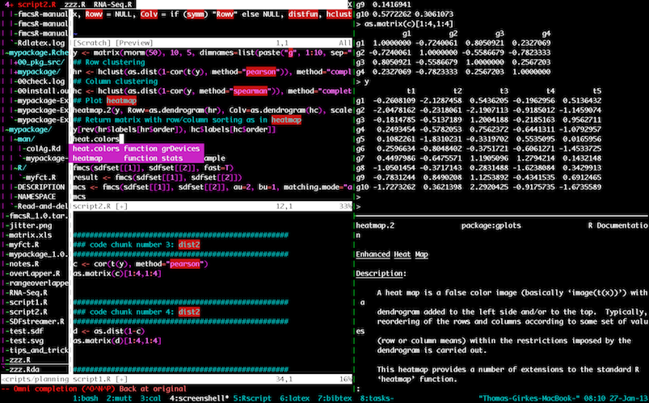

Introduction to the statistical programming environment R.
Edit me
Scope of this Manual
This tutorial provides a condensed introduction into the usage of the R
environment and its utilities for general data analysis and clustering. It also
introduces a subset of packages from the
Bioconductor project. The included packages are a
personal selection of the author of this manual that does not reflect the
full utility specturm of the R/Bioconductor projects. Many packages were
chosen, because the author uses them often for his own teaching and research.
To obtain a broad overview of available R packages, it is strongly recommended
to consult the official Bioconductor and R project sites. Due to the rapid
development of most packages, it is also important to be aware that this manual
will often not be fully up-to-date. Because of this and many other reasons, it
is absolutely critical to use the original documentation of each package (PDF
manual or vignette) as primary source of documentation. Users are welcome to
send suggestions for improving this manual directly to its
author.
A not always very easy to read, but practical copy & paste format has been
chosen throughout this manual. In this format all commands are represented in
code boxes, where the comments are given in blue color. To save space, often
several commands are concatenated on one line and separated with a semicolon
;. All comments/explanations start with the standard comment sign # to
prevent them from being interpreted by R as commands. This way several commands
can be pasted with their comment text into the R console to demo the different
functions and analysis steps. Commands starting with a $ sign need to be
executed from a Unix or Linux shell. Windows users can simply ignore them.
Commands highlighted in red color are considered essential knowledge. They are
important for someone interested in a quick start with R and Bioconductor.
Where relevant, the output generated by R is given in green color.
Installation of the R Software and R Packages
The installation instructions are provided in the
Administrative Section
of this manual. R working environments with syntax highlighting support and
utilities to send code to the R console:
 R Projects and Interfaces
R Projects and Interfaces
Introduction
R is a powerful statistical environment and
programming language for data analysis and visualization. The associated
Bioconductor and CRAN package repositories provide
many additional R packages for statistical data analysis for a wide array of
research areas, such as tools for big data and genome analysis. The R software
is free and runs on all common operating systems.
Look and Feel of the R Environment
Why Using R?
- Complete statistical environment and programming language
- Efficient functions and data structures for data analysis
- Powerful graphics
- Access to fast growing number of analysis packages
- Most widely used language in bioinformatics
- Is standard for data mining and biostatistical analysis
- Technical advantages: free, open-source, available for all OSs
Books and Documentation
- simpleR - Using R for Introductory Statistics (John Verzani, 2004) \href{http://cran.r-project.org/doc/contrib/Verzani-SimpleR.pdf}}
- Bioinformatics and Computational Biology Solutions Using R and Bioconductor (Gentleman et al., 2005) \href{http://www.bioconductor.org/help/publications/books/bioinformatics-and-computational-biology-solutions/}}
- More on this see “Finding Help” section in UCR Manual \href{http://manuals.bioinformatics.ucr.edu/home/R_BioCondManual#TOC-Finding-Help}}
Working environments (IDEs) for R
 R Projects and Interfaces
R Projects and Interfaces
Some R working environments with support for syntax highlighting and utilities to send code
to the R console:
Example: RStudio
New integrated development environment (IDE) for R. Highly functional for both beginners and
advanced.
 RStudio IDE
RStudio IDE
Some userful shortcuts: Ctrl+Enter (send code), Ctrl+Shift+C (comment/uncomment), Ctrl+1/2 (switch window focus)
Example: Vim-R-Tmux: Command-Line IDE for R
Terminal-based Working Environment for R: Vim-R-Tmux

Vim-R-Tmux IDE for R
Package Repositories
- CRAN ($>$6,000 packages) general data analysis \href{http://cran.at.r-project.org/}}
- Bioconductor ($>$900 packages) bioscience data analysis \href{http://www.bioconductor.org/}}
- Omegahat ($>$90 packages) programming interfaces \href{http://www.omegahat.org/}}
Installation of R and Add-on Packages
-
Install R for your operating system from CRAN.
-
Install RStudio from RStudio.
-
Install CRAN Packages from R console like this:
install.packages(c("pkg1", "pkg2"))
install.packages("pkg.zip", repos=NULL)
- Install Bioconductor packages as follows:
source("http://www.bioconductor.org/biocLite.R")
library(BiocInstaller)
BiocVersion()
biocLite()
biocLite(c("pkg1", "pkg2"))
- For more details consult the Bioc Install page
and BiocInstaller package.
Plotting example
barplot(1:10, col="green")
 \
\
## R version 3.2.3 (2015-12-10)
## Platform: x86_64-pc-linux-gnu (64-bit)
## Running under: Ubuntu 14.04.3 LTS
##
## locale:
## [1] LC_CTYPE=en_US.UTF-8 LC_NUMERIC=C LC_TIME=en_US.UTF-8
## [4] LC_COLLATE=en_US.UTF-8 LC_MONETARY=en_US.UTF-8 LC_MESSAGES=en_US.UTF-8
## [7] LC_PAPER=en_US.UTF-8 LC_NAME=C LC_ADDRESS=C
## [10] LC_TELEPHONE=C LC_MEASUREMENT=en_US.UTF-8 LC_IDENTIFICATION=C
##
## attached base packages:
## [1] stats graphics utils datasets grDevices methods base
##
## other attached packages:
## [1] ggplot2_2.0.0 limma_3.26.3 BiocStyle_1.8.0
##
## loaded via a namespace (and not attached):
## [1] Rcpp_0.12.3 codetools_0.2-14 digest_0.6.9 plyr_1.8.3 grid_3.2.3
## [6] gtable_0.1.2 formatR_1.2.1 magrittr_1.5 evaluate_0.8 scales_0.3.0
## [11] stringi_1.0-1 rmarkdown_0.9.2 tools_3.2.3 stringr_1.0.0 munsell_0.4.2
## [16] yaml_2.1.13 colorspace_1.2-6 htmltools_0.3 knitr_1.12